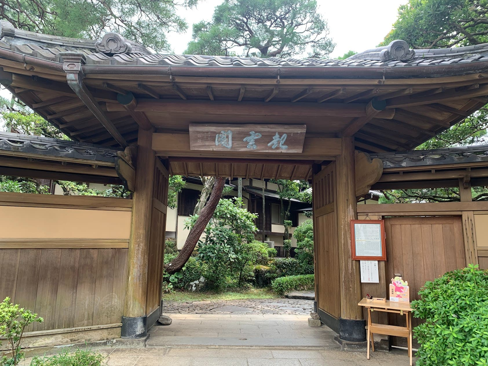

起雲閣
駅前の喧騒と離れた三大別荘の一つ 満足度高い

邸名：起雲閣
予算：\500～1000
アクセス：東日本旅客鉄道（JR東日本）伊東線 熱海駅より徒歩21分
バス利用：1番のりば 伊豆箱根バス
(相の原団地、梅園、清水町循環 行き)
2番のりば 伊豆箱根バス
(笹良ヶ台団地・西山・箱根方面 行き)
→「起雲閣前」下車 すぐ
地図
コメント
熱海駅から歩いて約20分。
熱海駅から若干歩くが周回バスも出ている。
ガイドがいるので内装等の意味を理解しつつ見学できる。
和館と洋館があり、見どころは洋館及び併設されたローマ風浴室。
洋館は3つあり、「玉姫」は和洋中それぞれの建築様式を取り入れている。
正面中央の暖炉はヨーロッパデザイン。
天井は「折上格天井」などの日本の神社仏閣に見られる建築様式。
「喜」の文字をデザインした中国風の彫刻や唐草模様の彫刻が見られる。
あまり混雑していないので、ゆっくりしたい際にもおすすめ。